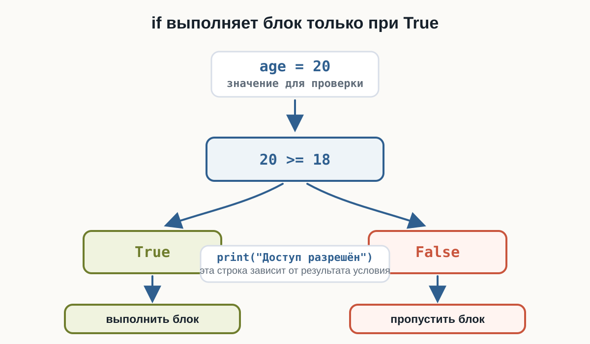
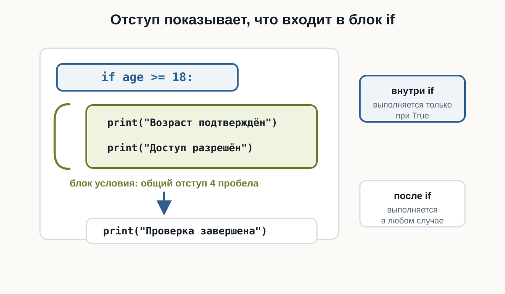
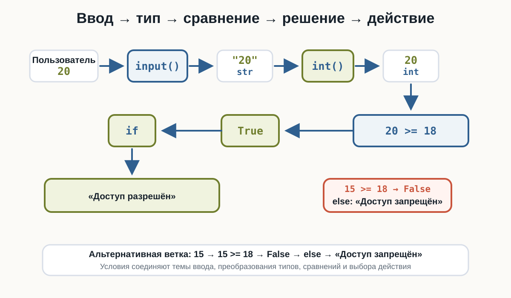
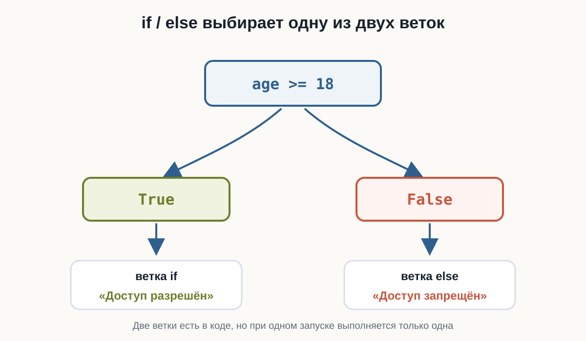
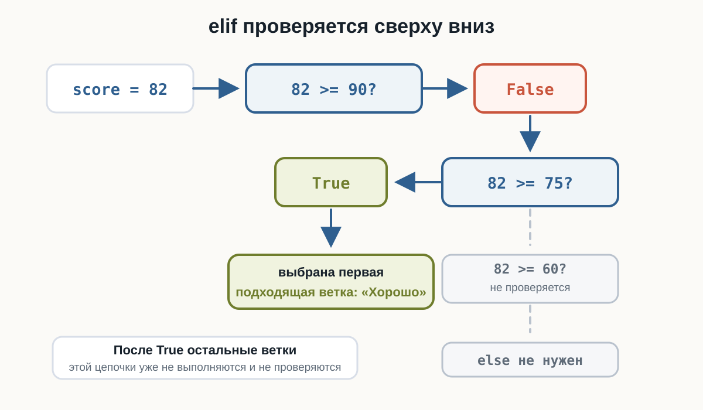

3.7 Условия
Главный вопрос главы:
Как сделать так, чтобы программа выполняла разные действия в зависимости от ситуации?
В предыдущей главе мы научились сравнивать значения:
age >= 18price <= budgetpassword == "python"Каждое такое выражение возвращает:
Trueили:
FalseНо пока программа только получает этот результат.
Например:
age = 20
print(age >= 18)Результат:
TrueГораздо интереснее сделать так:
если возраст не меньше 18
вывести "Доступ разрешён"Именно для этого в Python используются условия.
Первая условная конструкция
Начнём с простого примера:
age = 20
if age >= 18:
print("Доступ разрешён")Результат:
Доступ разрешёнЗдесь появилась новая конструкция:
ifСлово if можно перевести как:
если
Поэтому код:
if age >= 18:
print("Доступ разрешён")можно прочитать почти как обычное предложение:
Если
ageбольше или равно18, вывести «Доступ разрешён».
Как работает if
Рассмотрим:
age = 20
if age >= 18:
print("Доступ разрешён")Python сначала вычисляет условие:
age >= 18То есть:
20 >= 18Результат:
TrueТак как условие истинно, Python выполняет:
print("Доступ разрешён")
Что произойдёт при False
Изменим возраст:
age = 15
if age >= 18:
print("Доступ разрешён")Теперь условие:
age >= 18превращается в:
15 >= 18Результат:
FalseПоэтому строка:
print("Доступ разрешён")не выполняется.
Программа просто идёт дальше.
Например:
age = 15
print("Проверяем возраст")
if age >= 18:
print("Доступ разрешён")
print("Проверка завершена")Результат:
Проверяем возраст
Проверка завершенаСтрока внутри if была пропущена.
Синтаксис if
Условная конструкция начинается с:
ifЗатем записывается условие:
if age >= 18После условия обязательно ставится двоеточие:
if age >= 18:Следующая строка записывается с отступом:
if age >= 18:
print("Доступ разрешён")Общая форма:
if условие:
действиеПосле условия ставится:
:Правильно:
if age >= 18:
print("Доступ разрешён")Неправильно:
if age >= 18
print("Доступ разрешён")Без двоеточия Python сообщит о синтаксической ошибке.
Отступ — часть синтаксиса Python
Посмотрите ещё раз:
if age >= 18:
print("Доступ разрешён")Перед print() есть отступ.
Он показывает, что эта команда относится к if.
Без отступа:
if age >= 18:
print("Доступ разрешён")код записан неправильно.
В Python отступы — не просто оформление.
Они определяют структуру программы.
Внутри if обычно используется отступ в 4 пробела:
if condition:
print("Эта строка находится внутри if")Код без отступа уже находится за пределами этого блока:
if condition:
print("Внутри if")
print("После if")
Блок кода
Внутри условия может находиться не одна команда, а несколько.
Например:
age = 20
if age >= 18:
print("Возраст подтверждён")
print("Доступ разрешён")
print("Добро пожаловать!")
print("Программа завершена")Если условие True, выполняются все три строки с одинаковым отступом.
Можно представить:
if условие:
├── команда 1
├── команда 2
└── команда 3
следующая командаНесколько строк с одинаковым отступом образуют блок кода.
Условие после input()
Теперь объединим if с пользовательским вводом.
age = int(input("Введите возраст: "))
if age >= 18:
print("Доступ разрешён")Если пользователь введёт:
20получим:
Введите возраст: 20
Доступ разрешёнЕсли пользователь введёт:
15сообщение не появится.
Здесь соединяются уже знакомые конструкции:
пользователь
↓
input()
↓
str
↓
int()
↓
сравнение
↓
True / False
↓
if
↓
действиеТеперь результат сравнения действительно начинает влиять на поведение программы.

Ветка else
Часто одного if недостаточно.
Например, мы хотим:
если возраст >= 18
вывести "Доступ разрешён"
иначе
вывести "Доступ запрещён"Для второй ветки используется:
elseПример:
age = int(input("Введите возраст: "))
if age >= 18:
print("Доступ разрешён")
else:
print("Доступ запрещён")Если пользователь введёт:
20результат:
Доступ разрешёнЕсли:
15результат:
Доступ запрещёнКак работает if…else
Конструкцию можно представить так:

В коде:
if condition:
действие_если_true
else:
действие_если_falseВажно:
Из двух веток выполняется только одна.
Если условие True — выполняется if.
Если False — выполняется else.
Пример с паролем
Рассмотрим простой пример:
correct_password = "python123"
password = input("Введите пароль: ")
if password == correct_password:
print("Пароль верный")
else:
print("Пароль неверный")Если пользователь введёт:
python123сравнение:
password == correct_passwordдаст:
Trueи программа выведет:
Пароль верныйДругой пароль даст False, поэтому выполнится ветка else.
Пример с бюджетом
Условия могут использовать результаты числовых сравнений.
price = float(input("Цена товара: "))
budget = float(input("Ваш бюджет: "))
if budget >= price:
print("Покупку можно совершить")
else:
print("Недостаточно денег")Пример:
Цена товара: 750
Ваш бюджет: 1000
Покупку можно совершитьА при:
Цена товара: 1200
Ваш бюджет: 1000
Недостаточно денегВ этой же схеме можно не только выбрать сообщение, но и вычислить остаток:
Несколько вариантов: elif
Иногда двух вариантов недостаточно.
Например, программа оценивает температуру:
выше 25 → Жарко
выше 10 → Тепло
иначе → ХолодноДля дополнительных условий используется:
elifПример:
temperature = 18
if temperature > 25:
print("Жарко")
elif temperature > 10:
print("Тепло")
else:
print("Холодно")Результат:
ТеплоКак работает elif
Python проверяет условия сверху вниз.
Для программы:
temperature = 18
if temperature > 25:
print("Жарко")
elif temperature > 10:
print("Тепло")
else:
print("Холодно")сначала проверяется:
temperature > 25То есть:
18 > 25 → FalsePython переходит к следующему условию:
temperature > 10Получается:
18 > 10 → TrueПоэтому выполняется:
print("Тепло")После этого остальные ветки этой конструкции уже не проверяются.
Общая схема:

Порядок условий имеет значение
Рассмотрим:
score = 95
if score >= 60:
print("Зачёт")
elif score >= 90:
print("Отличный результат")Какой текст появится?
ЗачётПочему не:
Отличный результатПотому что первое условие:
score >= 60уже равно True.
После выполнения этой ветки Python не проверяет следующий elif.
Если нам нужны категории, более строгую проверку следует поставить раньше:
score = 95
if score >= 90:
print("Отличный результат")
elif score >= 60:
print("Зачёт")
else:
print("Незачёт")Теперь результат:
Отличный результатВ цепочке:
if ...
elif ...
elif ...
else ...Python выбирает первую подходящую ветку.
Поэтому порядок условий может изменить результат программы.
elif может быть несколько
В одной конструкции может быть несколько elif.
Например:
score = int(input("Введите балл: "))
if score >= 90:
print("Отлично")
elif score >= 75:
print("Хорошо")
elif score >= 60:
print("Зачёт")
else:
print("Незачёт")Например:
Введите балл: 82
ХорошоPython проверяет:
82 >= 90 → False
82 >= 75 → TrueПосле этого нужная ветка найдена.
else не содержит условия
Обратите внимание:
else:не содержит никакого сравнения.
Мы не пишем:
else age < 18:Правильно:
if age >= 18:
print("Совершеннолетний")
else:
print("Несовершеннолетний")else означает:
если ни одна предыдущая подходящая проверка не сработала.
elif и else не всегда обязательны
Можно использовать только if:
if temperature < 0:
print("На улице мороз")Можно использовать:
if ...
else ...Например:
if age >= 18:
print("Доступ разрешён")
else:
print("Доступ запрещён")Или:
if ...
elif ...
else ...Например:
if score >= 90:
print("Отлично")
elif score >= 60:
print("Зачёт")
else:
print("Незачёт")Выбор зависит от количества вариантов поведения программы.
Условием уже может быть bool
После if не обязательно писать сравнение непосредственно.
Можно заранее сохранить результат:
age = 20
is_adult = age >= 18
if is_adult:
print("Доступ разрешён")Переменная:
is_adultсодержит:
TrueПоэтому Python выполняет блок.
Это связывает текущую тему с типом bool, который мы изучали раньше.
age >= 18
↓
True
↓
is_adult
↓
ifКод после условия
Код без отступа выполняется после всей условной конструкции.
Например:
age = 15
if age >= 18:
print("Доступ разрешён")
else:
print("Доступ запрещён")
print("Проверка завершена")Результат:
Доступ запрещён
Проверка завершенаПоследний print() не относится ни к if, ни к else.
Поэтому он выполняется в любом случае.
Сравните:
if condition:
print("Внутри if")
print("После if")Отступ визуально показывает структуру программы.
Вложенные условия
Внутри одного if можно разместить другой if.
Например:
age = 20
has_ticket = True
if age >= 18:
print("Возраст подходит")
if has_ticket:
print("Билет есть")
print("Можно войти")Второй if выполняется только после того, как программа попала внутрь первого блока.
Структура выглядит так:
if первое условие:
действие
if второе условие:
действиеКаждый новый уровень вложенности получает дополнительный отступ.
Вложенные условия полезны, когда вторая проверка действительно зависит от первой.
Но большое количество вложенных if быстро делает код трудным для чтения.
Пока используйте вложенность только в простых и очевидных случаях.
Пример: билет в кино
Напишем небольшую интерактивную программу:
age = int(input("Введите возраст: "))
if age < 6:
price = 0
elif age < 18:
price = 300
else:
price = 500
print("Стоимость билета:", price)Пример:
Введите возраст: 12
Стоимость билета: 300Здесь условие не только выбирает сообщение.
Оно определяет значение переменной:
priceЭто важный шаг: разные ветки программы могут выполнять разные вычисления.
Пример: положительное, отрицательное или ноль
Условия позволяют классифицировать значение.
number = float(input("Введите число: "))
if number > 0:
print("Положительное число")
elif number < 0:
print("Отрицательное число")
else:
print("Ноль")Для:
Введите число: -5результат:
Отрицательное числоДля:
Введите число: 0результат:
НольЗдесь три возможных пути:
number > 0
↓
положительное
number < 0
↓
отрицательное
иначе
↓
нольПопробуйте сами
Запустите программу с разными значениями score:
score = 75
if score >= 90:
print("Отлично")
elif score >= 75:
print("Хорошо")
elif score >= 60:
print("Зачёт")
else:
print("Незачёт")Попробуйте:
100
90
89
75
74
60
59
0Перед каждым запуском сначала предскажите, какая ветка выполнится.
Особенно обратите внимание на граничные значения:
90
75
60Типичные ошибки
При работе с условиями начинающие часто сталкиваются с несколькими ошибками.
Пропущено двоеточие
Неправильно:
if age >= 18
print("Доступ разрешён")Правильно:
if age >= 18:
print("Доступ разрешён")Нет отступа
Неправильно:
if age >= 18:
print("Доступ разрешён")Правильно:
if age >= 18:
print("Доступ разрешён")Перепутаны = и ==
Для сравнения:
password == "python"а не:
password = "python"Неправильный порядок elif
Если более широкое условие поставить раньше более строгого:
if score >= 60:
print("Зачёт")
elif score >= 90:
print("Отлично")ветка score >= 90 никогда не будет выбрана для значения 95.
Правильнее:
if score >= 90:
print("Отлично")
elif score >= 60:
print("Зачёт")Что важно запомнить
Условные конструкции позволяют программе выбирать, какой код выполнять.
Основная форма:
if условие:
действиеДва варианта:
if условие:
действие_1
else:
действие_2Несколько вариантов:
if условие_1:
действие_1
elif условие_2:
действие_2
else:
действие_3Главная цепочка:
данные
↓
сравнение
↓
True / False
↓
if
↓
выбор действияВажно помнить:
if → если
elif → иначе если
else → иначеТакже:
- после
if,elifиelseставится:; - блоки кода обозначаются отступами;
- Python проверяет ветки сверху вниз;
- в цепочке
if / elif / elseвыполняется первая подходящая ветка; elseвыполняется, если предыдущие условия не подошли.
И самое важное:
Условия превращают программу из последовательности команд в программу, которая может выбирать своё поведение.
Практические задания
Задание 1. Положительное число
Пользователь вводит число.
Если оно больше 0, выведите:
Число положительноеЕсли число равно 0 или меньше, ничего выводить не нужно.
number = float(input("Введите число: "))
if number > 0:
print("Число положительное")Задание 2. Совершеннолетие
Пользователь вводит возраст.
Если возраст не меньше 18, выведите:
Доступ разрешёнИначе:
Доступ запрещёнage = int(input("Введите возраст: "))
if age >= 18:
print("Доступ разрешён")
else:
print("Доступ запрещён")Задание 3. Проверка пароля
Правильный пароль:
correct_password = "python123"Попросите пользователя ввести пароль.
Если он совпадает с правильным, выведите:
Добро пожаловатьИначе:
Неверный парольcorrect_password = "python123"
password = input("Введите пароль: ")
if password == correct_password:
print("Добро пожаловать")
else:
print("Неверный пароль")Задание 4. Больше из двух чисел
Пользователь вводит два разных числа.
Выведите большее из них.
Пример:
Первое число: 10
Второе число: 25
Большее число: 25.0first = float(input("Первое число: "))
second = float(input("Второе число: "))
if first > second:
print("Большее число:", first)
else:
print("Большее число:", second)Задание 5. Температура
Пользователь вводит температуру.
Выведите:
Жаркоесли температура выше 25.
Выведите:
Теплоесли температура выше 10, но не выше 25.
В остальных случаях:
Холодноtemperature = float(input("Введите температуру: "))
if temperature > 25:
print("Жарко")
elif temperature > 10:
print("Тепло")
else:
print("Холодно")Задание 6. Оценка результата
Пользователь вводит количество баллов от 0 до 100.
Выведите:
Отличноесли балл не меньше 90.
Хорошоесли балл не меньше 75.
Зачётесли балл не меньше 60.
В остальных случаях:
Незачётscore = int(input("Введите балл: "))
if score >= 90:
print("Отлично")
elif score >= 75:
print("Хорошо")
elif score >= 60:
print("Зачёт")
else:
print("Незачёт")Порядок условий здесь важен.
Сначала проверяются самые высокие границы:
90
↓
75
↓
60Задание 7. Найдите ошибку
Почему программа работает неправильно для score = 95?
score = 95
if score >= 60:
print("Зачёт")
elif score >= 90:
print("Отлично")
else:
print("Незачёт")Исправьте её.
Python проверяет условия сверху вниз.
Для:
score = 95первое условие:
score >= 60уже равно True.
Поэтому Python выполняет эту ветку и больше не проверяет elif.
Нужно поменять условия местами:
score = 95
if score >= 90:
print("Отлично")
elif score >= 60:
print("Зачёт")
else:
print("Незачёт")Теперь результат:
ОтличноЗадание 8. Положительное, отрицательное или ноль
Пользователь вводит число.
Программа должна вывести одно из трёх сообщений:
Положительное число
Отрицательное число
Нольnumber = float(input("Введите число: "))
if number > 0:
print("Положительное число")
elif number < 0:
print("Отрицательное число")
else:
print("Ноль")Задание 9. Стоимость билета
Пользователь вводит возраст.
Стоимость билета:
до 6 лет → 0
от 6 до 17 → 300
18 и старше → 500Определите стоимость и выведите её.
age = int(input("Введите возраст: "))
if age < 6:
price = 0
elif age < 18:
price = 300
else:
price = 500
print("Стоимость билета:", price)Обратите внимание: после того как первое условие:
age < 6оказалось False, во второй ветке уже известно, что возраст не меньше 6.
Поэтому достаточно проверить:
age < 18Задание 10. Задача со звёздочкой
Напишите программу проверки покупки.
Пользователь вводит:
- цену товара;
- количество денег.
Если денег больше или столько же, сколько стоит товар:
- вывести:
Покупка возможна- вычислить остаток денег;
- вывести остаток.
Иначе вывести:
Недостаточно денегПример:
Цена товара: 750
Ваши деньги: 1000
Покупка возможна
Остаток: 250.0price = float(input("Цена товара: "))
money = float(input("Ваши деньги: "))
if money >= price:
remaining = money - price
print("Покупка возможна")
print("Остаток:", remaining)
else:
print("Недостаточно денег")Здесь объединяются сразу несколько изученных тем:
input()
↓
float()
↓
сравнение
↓
if / else
↓
арифметика
↓
результатЧто дальше?
Теперь наши программы уже могут реагировать на данные:
age = int(input("Возраст: "))
if age >= 18:
print("Доступ разрешён")
else:
print("Доступ запрещён")Но реальные решения часто зависят сразу от нескольких требований.
Например:
возраст не меньше 18
И
билет купленили:
пользователь администратор
ИЛИ
пользователь владелецЧтобы объединять несколько условий, понадобятся логические операторы.
Они позволят строить более сложные проверки из уже знакомых значений True и False.
Следующая глава: Логические операции.